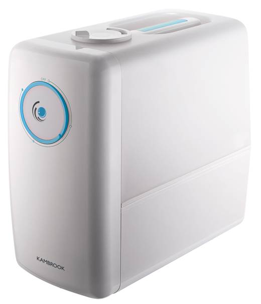
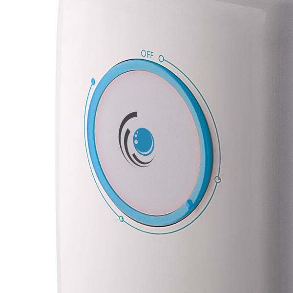
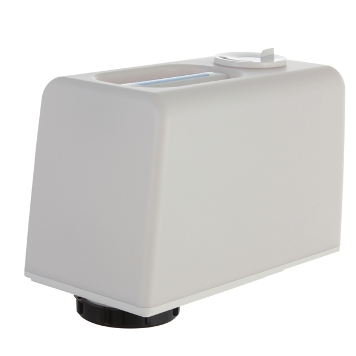
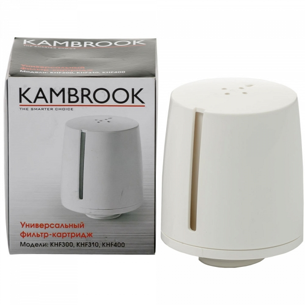
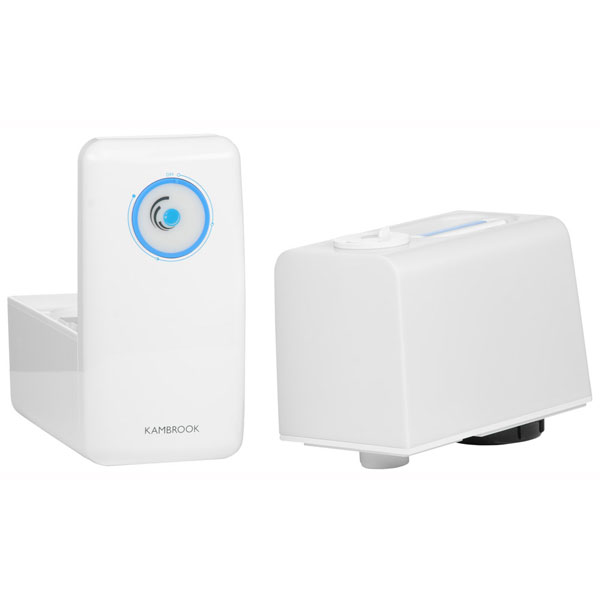

Воздухоувлажнитель Kambrook KHF300
Воздухоувлажнитель Kambrook KHF300 использует ультразвуковую технологию распыления воды. Она обеспечивает эффективное распределение влаги в помещении, сохраняя при этом высокий уровень комфорта.
Удобство управления
Простой регулятор позволяет задавать требуемый уровень интенсивности увлажнения простыми, интуитивно понятными движениями. Оттенок подсветки меняется в зависимости от выбранного режима, что помогает контролировать работу устройства.
Продолжительное использование
Полного бака объемом 5л. воды хватает более чем на 10 часов непрерывной работы устройства, поэтому пользователю не придётся беспокоиться о частом пополнении её запасов.
Максимальная безопасность
Увлажнитель автоматически отключается при отсутствии воды, что помогает избежать повреждения его мембраны.
Уникальная фильтрация
Универсальный фильтр-картридж, который входит в комплект, предотвращает образование белого налета на мебели и очищает воду от вирусов и бактерий.
Технические характеристики

Напряжение: 220 В
Частота: 50 Гц
Мощность: 110 Вт
Объем резервуара для воды: 5 л
Производительность: 100 - 400 мл/ч
Комплектация
- Руководство по эксплуатации: 1 шт.
- Гарантийный талон: 1 шт.
Внимание
Использование воды с температурой выше 40 °С может привести к деформации резервуара для воды.
Тестирование
Согласно внутренним правилам Kambrook, увлажнитель воздуха KNF300 беспрерывно тестировался более 5000 часов. Этого достаточно для использования увлажнителя в течение 2 лет для поддержания комфортного уровня влажности.